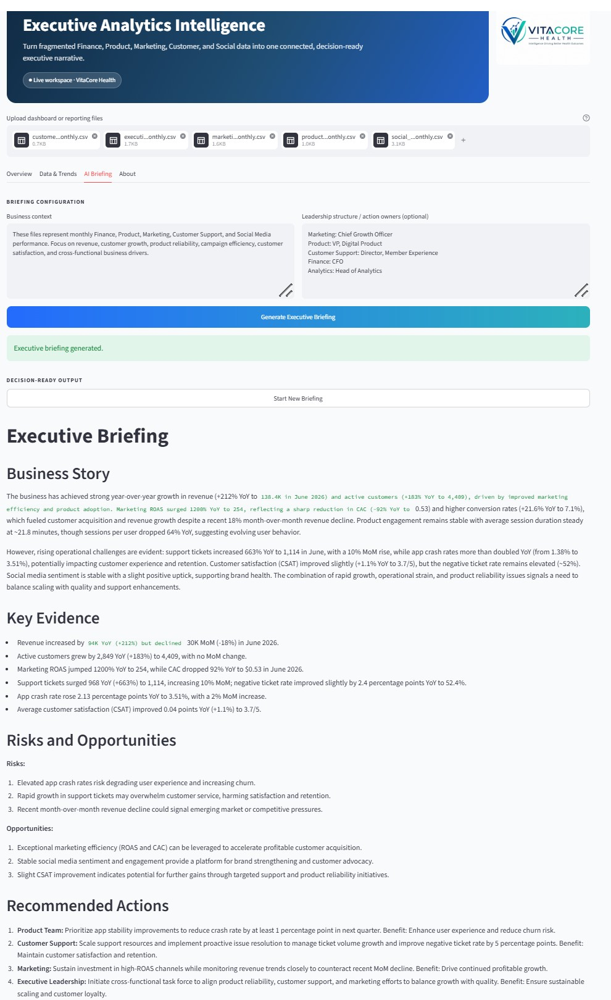

AI & Executive Analytics
Executive Analytics Intelligence
AI-powered decision-support platform combining finance, product, marketing, customer, support, and social data into one connected executive view.
View Case Study →Featured Project
AI-Powered Executive Decision Support Platform
Built using Python, Streamlit, Plotly, OpenAI, and advanced analytics to help business leaders monitor KPIs, identify performance drivers, and generate executive-ready summaries in seconds.

BUSINESS CHALLENGE
Executive teams often rely on separate dashboards for Finance, Marketing, Product, Customer, Support, and Social Media. While each dashboard provides valuable information, they rarely connect the full business story, making it difficult to identify performance drivers and make timely, data-driven decisions.
The goal of this project was to build an AI-powered executive decision support platform that consolidates cross-functional business metrics into a single interactive application. Beyond visualization, the platform uses generative AI to automatically summarize KPI trends, highlight emerging risks, and generate executive-ready business briefings.
SOLUTION OVERVIEW
Executive Analytics Intelligence brings together data from Finance, Product, Marketing, Customer, Support, and Social Media into a single interactive dashboard. Instead of reviewing multiple disconnected reports, business leaders can monitor enterprise KPIs, explore trends, and understand cross-functional performance from one centralized application.
The platform also incorporates Generative AI to transform dashboard metrics into executive-ready narratives. AI-generated briefings summarize key business changes, identify emerging risks, highlight growth opportunities, and provide concise recommendations that accelerate executive decision-making.
KEY FEATURES
Consolidates Finance, Product, Marketing, Customer, Support, and Social Media metrics into a single executive view.
Automatically generates executive-ready summaries, identifies business risks, and highlights growth opportunities.
Visualize KPI trends over time and quickly identify changes in business performance.
Upload Excel or CSV reporting files to analyze new business data without changing the application.
AI EXECUTIVE BRIEFING
The platform uses generative AI to translate cross-functional business metrics into concise executive summaries. It highlights key performance changes, emerging risks, growth opportunities, and recommended actions so leaders can move from dashboard review to decision-making more quickly.

BUSINESS IMPACT
Executive Analytics Intelligence enables leaders to move beyond reporting by consolidating enterprise KPIs, automating executive summaries, and surfacing actionable business insights. Rather than reviewing disconnected dashboards, decision-makers can quickly understand what changed, why it matters, and where attention is needed.
Combines Finance, Product, Marketing, Customer, Support, and Social Media into one connected business view.
Automatically summarizes KPI changes, identifies risks, highlights opportunities, and recommends next actions.
Streamlines recurring executive reporting and helps leadership spend more time making decisions rather than compiling information.
TECHNOLOGY STACK
The application combines data processing, interactive visualization, and generative AI to create a flexible executive analytics workflow.
Data processing, business logic, and application development.
Interactive web application and executive dashboard interface.
Data cleaning, transformation, and KPI calculations.
Interactive trend charts and business performance visualization.
Executive briefing generation and business insight synthesis.
Prompt orchestration and AI workflow integration.
FUTURE ROADMAP
Add natural-language questions so leaders can explore KPIs and business drivers through an executive analytics chatbot.
Connect cloud data sources and scheduled pipelines to reduce manual uploads and enable recurring reporting.
Introduce forecasting, anomaly detection, and scenario modeling to support proactive business planning.
EXPLORE THE PROJECT
Explore the source code, demo assets, technical documentation, and release history on GitHub.
View Project on GitHubFeatured Work
Selected projects demonstrating business problem-solving, technical execution, and executive decision support.
AI & Executive Analytics
AI-powered decision-support platform combining finance, product, marketing, customer, support, and social data into one connected executive view.
View Case Study →Customer Analytics
Customer intelligence platform using RFM segmentation, market basket analysis, and next-best-product recommendations to identify revenue growth opportunities.
View Case Study →Machine Learning
Machine learning solution using customer segmentation and predictive modeling to improve engagement and click-through performance.
View Case Study →Healthcare Analytics
Predictive modeling project using healthcare claims data to identify long-term opioid risk and support provider and insurer decision-making.
View Case Study →